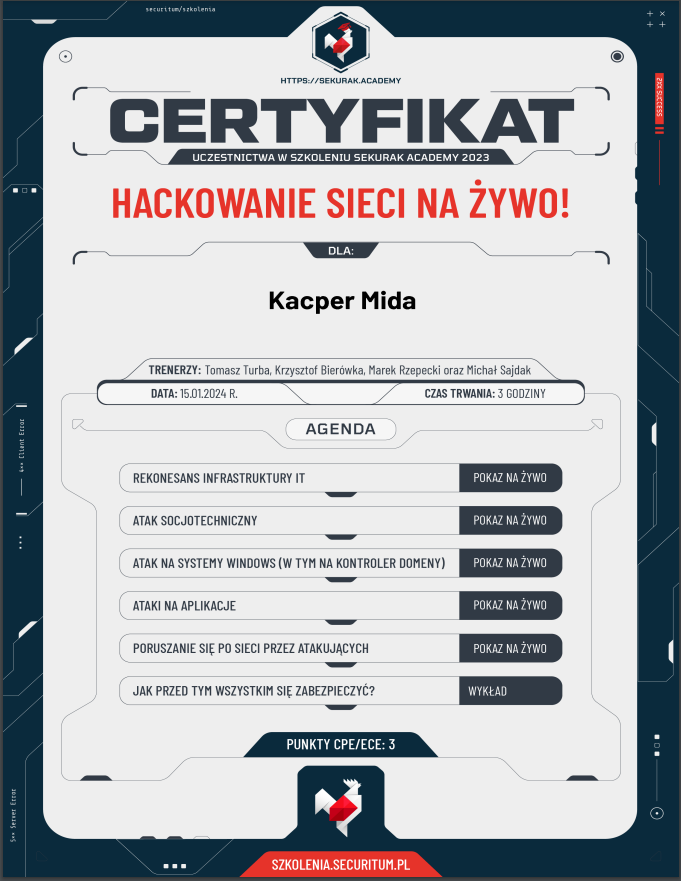

Szkolenie Sekurak Academy Hackowanie Sieci Na Żywo!
2024-01-15
Szczególnie w pamięci zapadł mi pierwszy sposób ataku w którym plik podszywał się pod zwykły plik z worda a tak naprawdę w nazwie było strasznie dużo spacji żeby na końcu ukryć rozszerzenie .exe. Plik ten potrafił wykrać całą zawartość danych zapisanych przez przeglądarkę Fire Fox łącznie z zapisanymi hasłami w formie hash.
